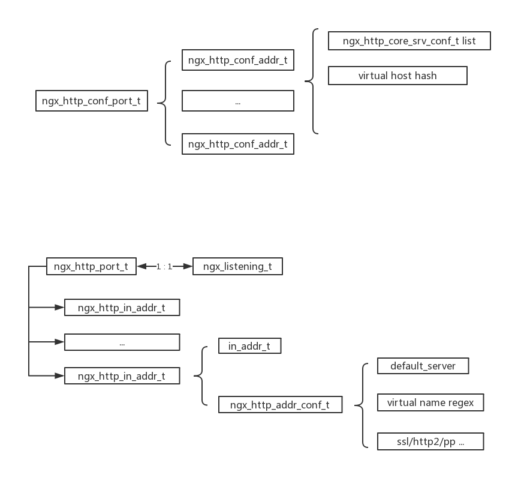

1. 入门
我们先看一个nginx配置
1 | http { |
上面是我编的配置，假设一个机器上有2个IP，10.0.0.2和192.169.0.3，我们可以让ngin监听在不同的IP上来完成对同的对外服务。
我们可以看到在不同的server{}段里，监听的IP和port是有冲突的，但我们是知道一个请求到来之后交给哪个server{}处理。
| host | 请求地址 | 命中的server{} |
|---|---|---|
| www.test1.com | 10.0.0.2:80 | server1 |
| www.test1.com | 192.168.0.3:8080 | bad |
| www.test2.com | 192.168.0.3:8080 | server2 |
| www.test3.com | 10.0.0.2:80 | server3 |
| www.test3.com | 192.168.0.3:8080 | server3 |
也就是目标地址和域名 必须和server{}里的listene地址server_name匹配才行。
那么nginx是如何管理这么复杂的地址的呢？
2.解释
我们知道当一个解析到listen命令的时候，会执行函数
1 | static char * |
注意，第三个conf就是ngx_http_core_srv_conf_t, 也就是保存了listen命令所在地这个server{}的所有信息。
跟踪这个函数的执行，就能得到我们到所有信息了。
在理解细节之前，我们需要明白一个事情，也就是listen这个命令，最终会导致nginx去监听一个tcp地址。这个监听的地址到底是全局的？还是per server{}的呢？
答案自然是全局的。
有了这个答案，我们才好理解nginx是如何管理地址的。 我们先看一个http的全局conf的定义
1 | typedef struct { |
这里有个变量是*ports, 这里保存的就是本nginx监听的所有port的list，针对章节1的例子，这个list成员有2个，一个代表80，一个代表8080，具体包装他们的结构就是ngx_http_conf_port_t：1
2
3
4
5typedef struct {
ngx_int_t family;
in_port_t port;
ngx_array_t addrs; /* array of ngx_http_conf_addr_t */
} ngx_http_conf_port_t;
一个port下可以挂很多个地址，还是看前面的例子，80port下的两个地址分别是10.0.0.2和192.168.0.3。对应的类型就是ngx_http_conf_addr_t1
2
3
4
5
6
7
8
9
10
11
12
13
14
15
16
17
typedef struct {
ngx_http_listen_opt_t opt;
ngx_hash_t hash;
ngx_hash_wildcard_t *wc_head;
ngx_hash_wildcard_t *wc_tail;
#if (NGX_PCRE)
ngx_uint_t nregex;
ngx_http_server_name_t *regex;
#endif
/* the default server configuration for this address:port */
ngx_http_core_srv_conf_t *default_server;
ngx_array_t servers; /* array of ngx_http_core_srv_conf_t */
} ngx_http_conf_addr_t;
opt是这个listen的一些选项，比如http2，ssl等等。对于一个地址即IP:port 会有多个server_name，这里说的就是虚拟主机。当地址一样的时候，nginx可以根据
输入的域名，来使用不同的server{}配置。看最后一个字段servers，一个监听地址可以对应多个server{}（因为不通的虚拟主机嘛）
3.nginx对虚拟主机的管理
那么nginx又是如何实现虚拟主机的管理的呢？
这一切的入口在ngx_http_optimize_servers里，当一个http{}加载完毕后，回执行这个函数。1
2
3static ngx_int_t
ngx_http_optimize_servers(ngx_conf_t *cf, ngx_http_core_main_conf_t *cmcf,
ngx_array_t *ports)
参数就是http_core模块的main conf和其内部的port list。nginx是基于port管理的，port下挂监听相同port的addr list，addr里挂virtual host list。
第一步，对于每个监听地址调用函数ngx_http_server_names。对其下的域名进行整理，根据配置使用hash表，通配，正则方式进行归类，方便以后查找用。
第二步，执行ngx_http_init_listening，可以简单说一下这里的处理逻辑
- 对一个port下地址排序的时候会放到最后，比如:80,如果有这个，则认为支持wild匹配，server{}没有写listen命令的会使用这个配置
- 组织运行态的port/addr/listen的数据结构，方便运行时查找到对应的配置。
配置态和运行态的数据结构组织关系图

最后我们看看来一个连接时候的查找流程。对于一个listen来讲，它可定是对应一个ngx_listening_t的，也就是对应一个ngx_http_port_t。
ngx_http_port_t是一个要么一个精准的IP:port结构，要么是1-n个精准的IP:port 外加一个*：port。
当accept一个链接的时候，我们能通过callback data知道是哪个listen，但还仍然需要根据目的地址，去找到底匹配了哪个IP:port。（仅针对IP:port + *:port的case下）。
最后找到了ngx_http_addr_conf_t（从运行态图里找）。后续可以根据这个找虚机主机相关的配置。
以上